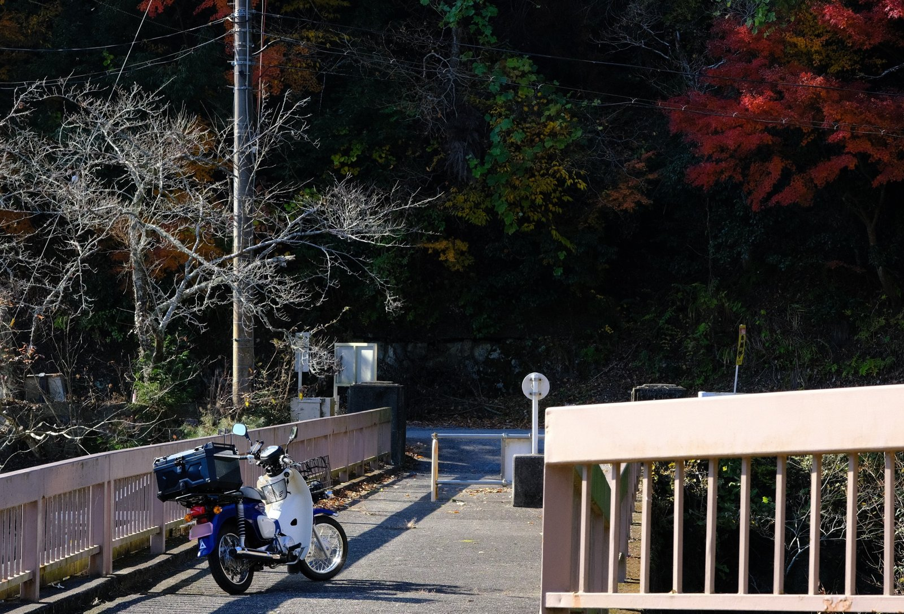

JA42

なんとなく久々にバイクに乗りたくなり、勢いであまり調べずに中古のスーパーカブを入手。
その昔、友人が黄色ナンバーのプレスカブに乗っていたので、同じようなものかと思っていたら、 現行は110ccあるんですね。4速もセルもついて、一回り大きい。JA42という形式らしい。
箱とキャリアを付けて、半日ほどのツーリングに行ってみた。
気の向くままの、暮らしと趣味の記録

なんとなく久々にバイクに乗りたくなり、勢いであまり調べずに中古のスーパーカブを入手。
その昔、友人が黄色ナンバーのプレスカブに乗っていたので、同じようなものかと思っていたら、 現行は110ccあるんですね。4速もセルもついて、一回り大きい。JA42という形式らしい。
箱とキャリアを付けて、半日ほどのツーリングに行ってみた。